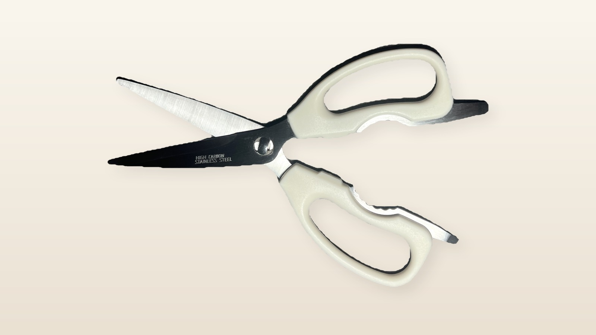
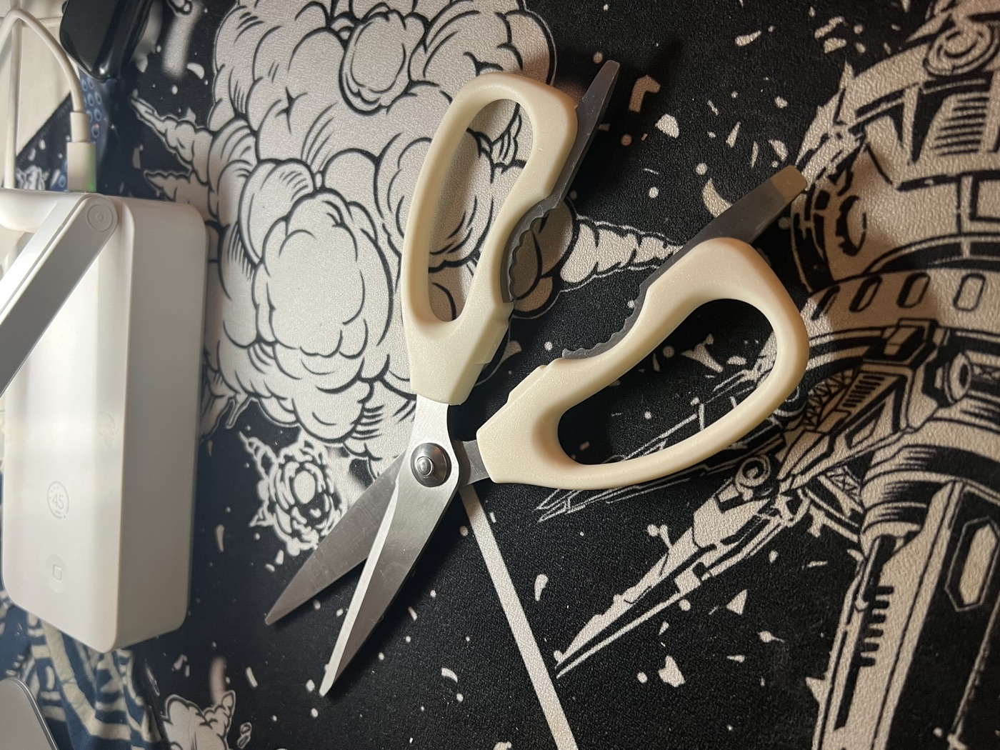
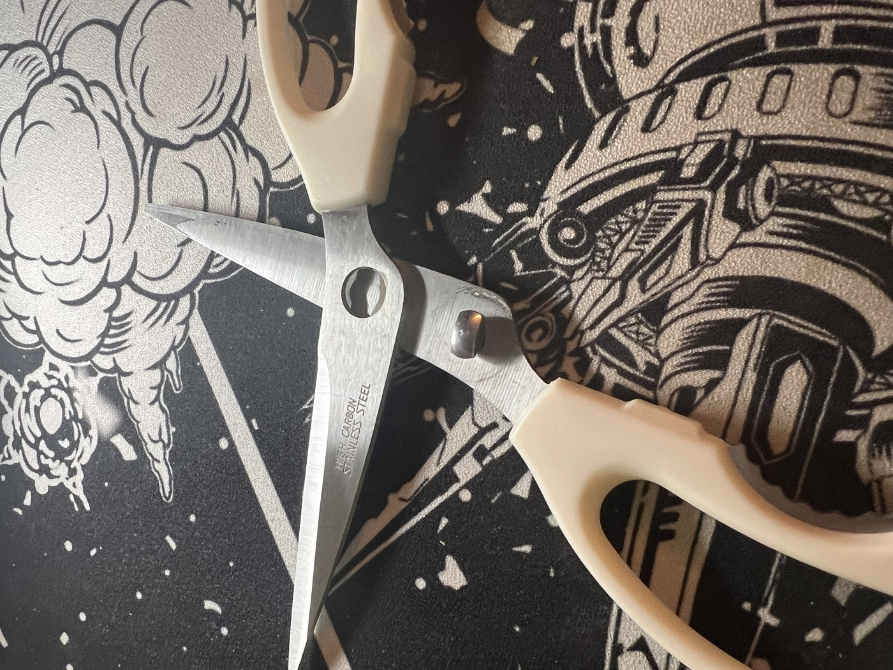
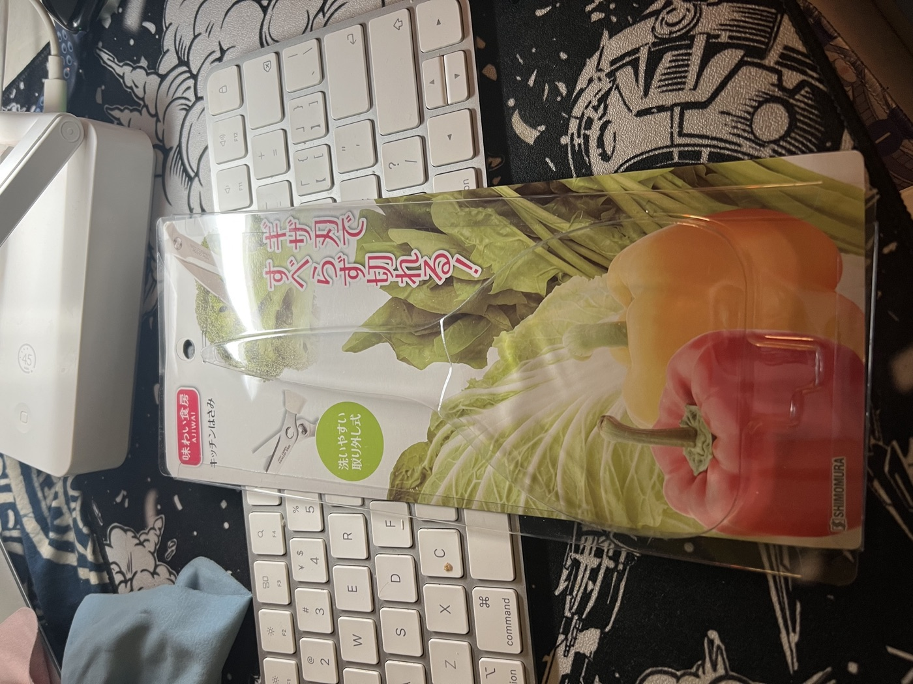
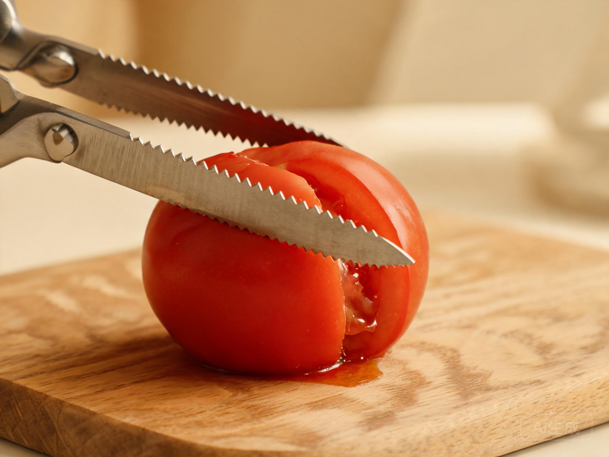
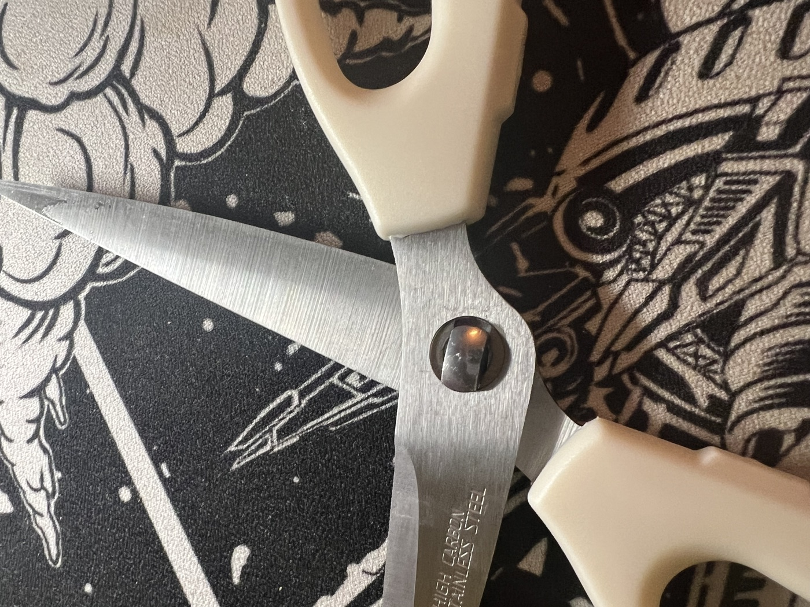
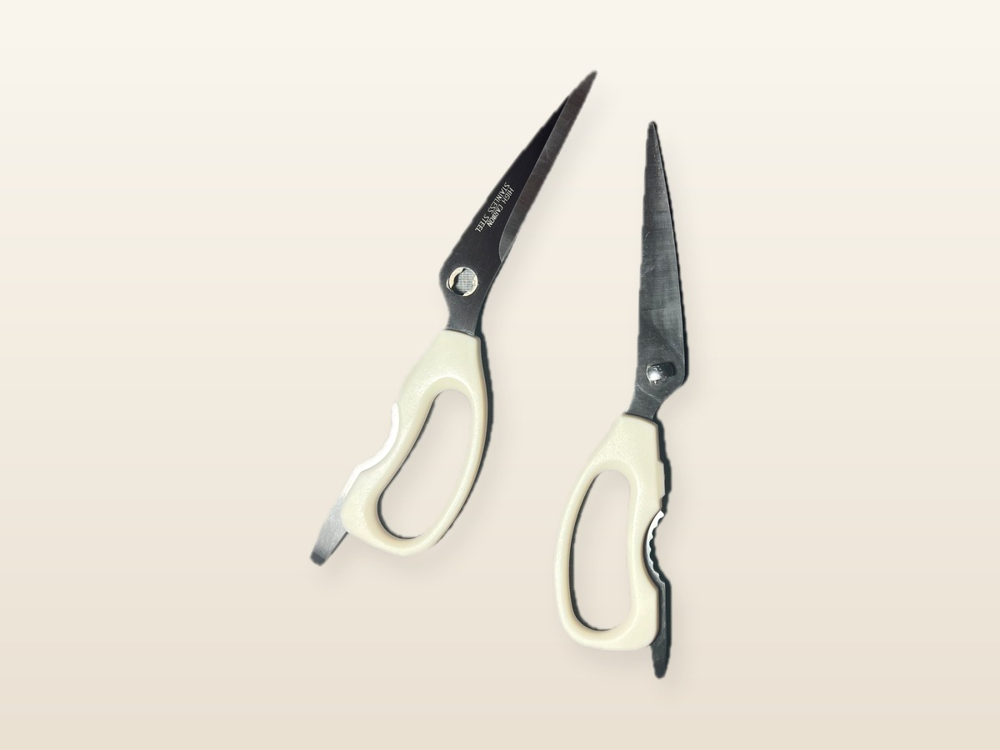
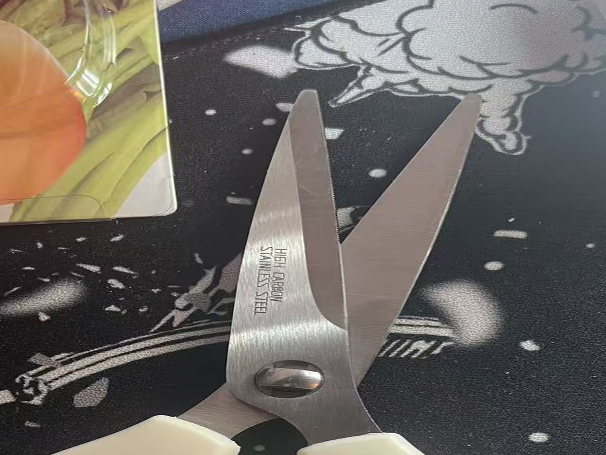
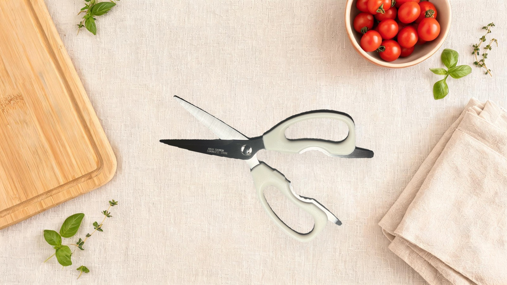

握得稳 · 剪得动 · 好清洗
给长辈用着省力，全家人也通用。一把剪，厨房大半的活都能对付。

实物拍摄



品牌：日本 下村工業（Shimomura）「味わい食房」系列 · 型号 A5K-403
一 · 先 看 痛 点
二 · 锯 齿 刃

刀刃一面带细锯齿，咬住食材不打滑。番茄、带皮肉、葱、保鲜膜、铝箔——不用反复磨、不用使劲压，一刀就断。
三 · 可 拆 洗

实拍：两半可拆开

拆开后冲洗干净
转轴不是死的，两半直接拔开。刀根、转轴、齿缝都能冲干净，洗完摊开晾干，不积水、不藏脏、不生锈。
拆开是为了洗干净，装回去还是一把，别拆成两半单独使。
四 · 刃 尖

刃尖收得细，剪菜根、剪虾须、剪葱段能一直剪到最根部；不像厚刃的剪子，一压就把菜压扁、出水。
五 · 大 手 柄
六 · 一 把 顶 三 样
不是笼统的“带开瓶器”。这把剪上有三处各管一件事，位置不同、用法也不同，买之前先分清。
三处位置不同，别混用：夹口拧盖、一字头拧螺丝、小钩撬拉环。
七 · 刀 刃 材 质
高碳不锈钢刀刃，硬度够、保持锋利的时间长；日常水洗不易锈。手柄为 ABS 树脂，耐热 80℃，轻巧不坠手。
八 · 谁 都 能 用

九 · 参 数 与 说 明
| 品名 | 厨房剪（キッチンはさみ） |
|---|---|
| 品牌 / 系列 | 日本 下村工業 Shimomura · 味わい食房 AJIWAI |
| 型号 | A5K-403 |
| 刀刃 | 高碳不锈钢（HIGH CARBON STAINLESS STEEL），一面锯齿刃 |
| 手柄 | ABS 树脂，耐热温度 80℃ |
| 特点 | 锯齿刃 · 可拆分清洗 · 刃尖细长 · 手柄夹口拧盖 · 尾部螺丝刀 · 拉环起子 |
| 产地 | 中国制造（包装标注 MADE IN CHINA） |
| 品牌出品 | 下村工業株式会社 · 日本新潟 |
说明：本品为日本品牌设计、中国制造，如实标注，不冒充“日本进口”。
一把顺手的剪刀，
能让做饭轻松一点。
握得稳、剪得动、好清洗——给爸妈，也给自己。
厨 房 剪 · 商 品 详 情 页